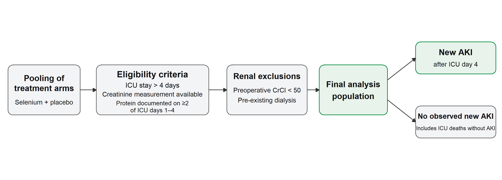
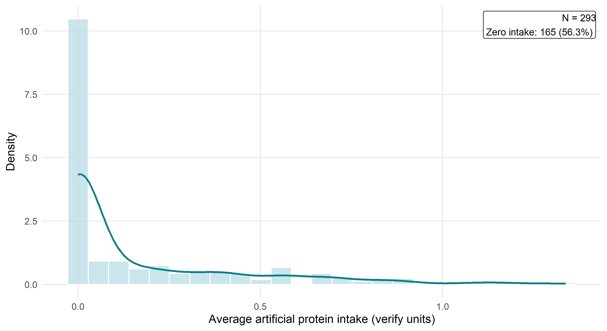
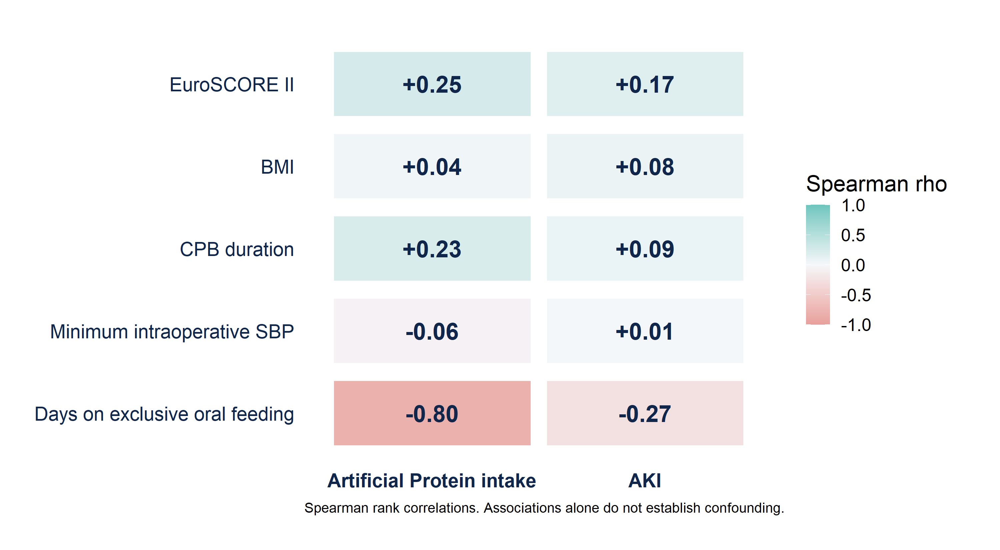
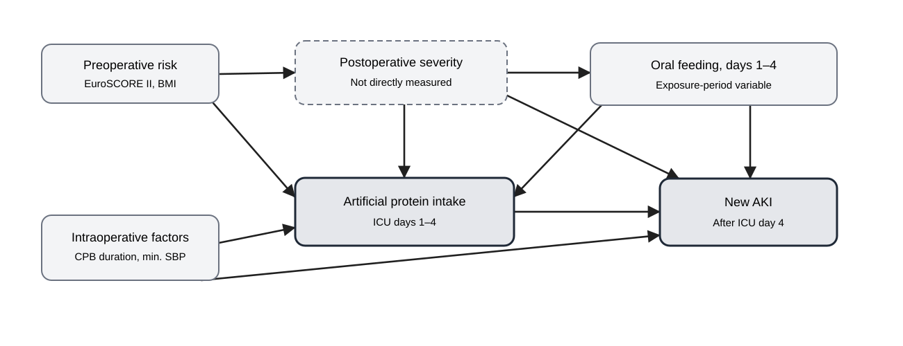
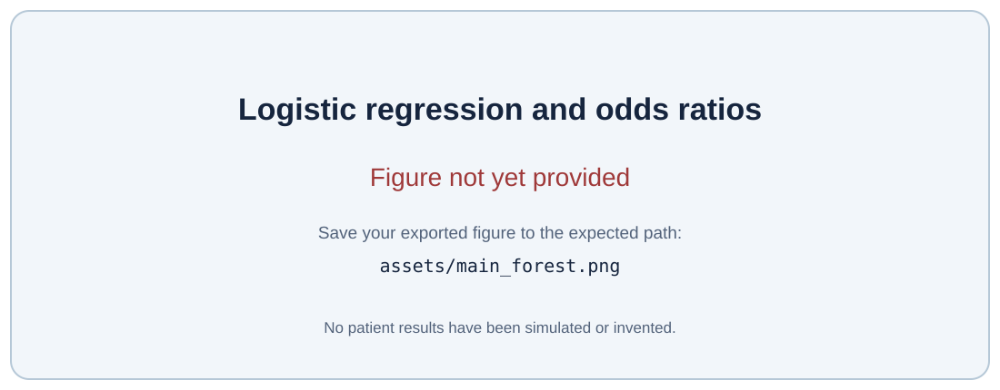
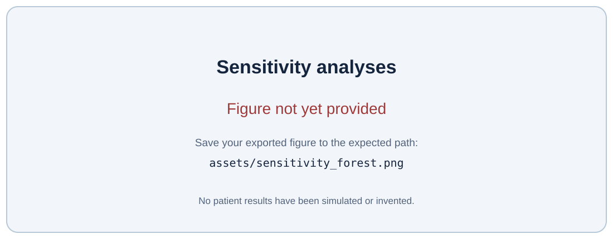
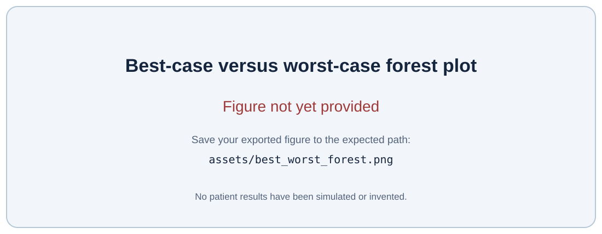
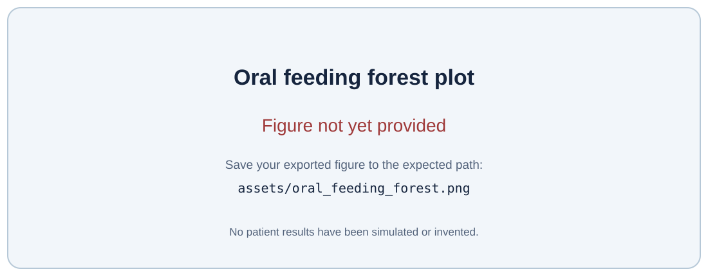
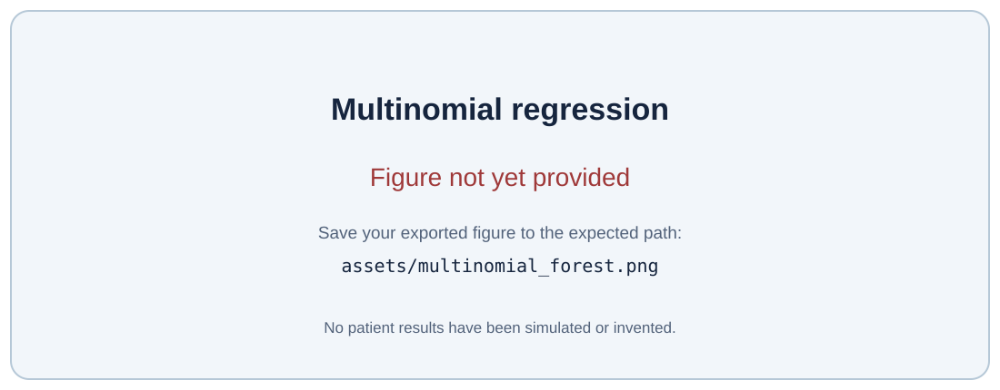
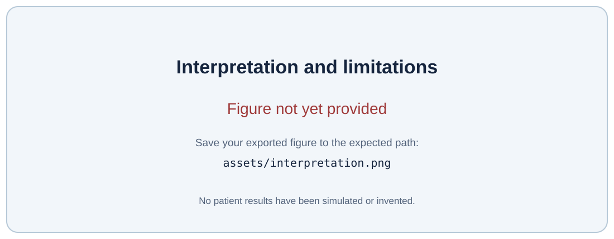

| Patient category | Number of patients |
|---|---|
| Total number of patients | 293 |
| Patients who developed AKI | 74 |
| Patients without AKI who died in ICU | 15 |
| Patients without AKI who survived ICU | 204 |
Fortgeschrittenes Praxisprojekt · LMU Munich
Intermediate Presentation · 4 December 2026
Aymen Feki · Ilyes Lihidheb · Jonas Ziegler · Tom Baumann · Yassine Ben Ahmed
Project partner: Wolfgang Hartl
In our project, we investigate the relationship between protein intake during intensive care treatment and the subsequent development of acute kidney injury (AKI) in cardiac surgery patients.
CLINICAL CONTEXT
CLINICAL UNCERTAINTY
AKI — Acute Kidney Injury
A sudden deterioration in kidney function, often detected by increased blood creatinine.
CPB — Cardiopulmonary Bypass
A heart-lung machine temporarily maintains blood circulation and oxygenation during cardiac surgery.
SBP — Systolic Blood Pressure
Blood pressure when the heart contracts. We use the minimum SBP recorded during surgery.
Study Design
The original trial was prospective and randomized (selenium vs. placebo). Our protein–AKI analysis is observational and post-hoc.
Competing Risk
Death before AKI prevents its subsequent occurrence and complicates outcome analysis.
Artificial Protein Intake vs. Oral Feeding
Artificial: Protein delivered through nutritional support rather than normal eating.
Oral: Nutrition consumed by mouth.
The treating physician determined the feeding approach based on the patient’s clinical condition; it was not randomized.
The original study was conducted from 2015 to 2021 at 23 centers in Germany and Canada (1416 patients) to test whether high-dose selenium could prevent postoperative organ dysfunction and death in high-risk patients undergoing cardiac surgery.

Is artificial protein intake during ICU days 1–4 associated with new acute kidney injury (AKI) after day 4?
Exposure and outcomes
PROTEIN EXPOSURE
AKI OUTCOMES
AKI_any)AKI_any_early)Days 1–4: protein exposure → Day 5 onward: AKI observation
| Patient category | Number of patients |
|---|---|
| Total number of patients | 293 |
| Patients who developed AKI | 74 |
| Patients without AKI who died in ICU | 15 |
| Patients without AKI who survived ICU | 204 |



COMPETING EVENT: ICU DEATH
Died without AKI — 15 patients
Survived without AKI — 204 patients
ORAL FEEDING AS CLINICAL INFORMATION
IMPLICATIONS FOR OUR ANALYSIS






01 Confounding
Does our DAG adequately reflect severity of illness and clinical treatment decisions?
02 Competing events
How should death before AKI be handled beyond the worst-case analysis?
03 Robustness
Which sensitivity analyses are most informative given available variables?
LMU Munich · Statistics and Data Science